Homework 1: Rasterizer
Webpage: cal-cs184-student.github.io/hw1-rayshineeeee-writeup/
Overview
I built a software rasterizer that turns SVG geometry into pixels. It tests triangle coverage, averages subpixel samples to smooth edges, applies transforms, and interpolates colors and texture coordinates. Texture filtering then decides which texels and mip levels contribute to each sample.
The main connection I learned is that both jagged edges and texture moiré come from sampling too little information. Supersampling estimates coverage within a screen pixel, while mipmaps prefilter texture detail before lookup. Storing each pixel's samples together also made the link between a 2D image and its 1D buffer clearer.
A few implementation details mattered: resizing the sample buffer when the window or sample rate changes, filling every sample for points and lines, and using double precision for shared-edge calculations. I also fixed the mip-generation loop so it fills the last level, which is needed when a texture becomes very small on screen.
The extra credit adds scanline filling, jittered samples, viewport rotation, and anisotropic filtering. The final artwork is a simplified Campanile based on a photo I took.
Task 1: Drawing single-color triangles
I skip zero-area triangles, find the smallest rectangle containing the three vertices, and clip that bounding box to the framebuffer. At one sample per pixel, I test the center, (x + 0.5, y + 0.5), against the three edges. The point is inside when all edge values have the same sign. Accepting either sign handles both vertex orders; allowing zero includes points on an edge.
A covered sample receives the triangle's color in the sample buffer. The bounding-box version visits only pixels in that box and does three constant-time edge tests per sample. Its work is proportional to the number of samples in the box, meeting the required bound. Clipping skips off-screen samples.
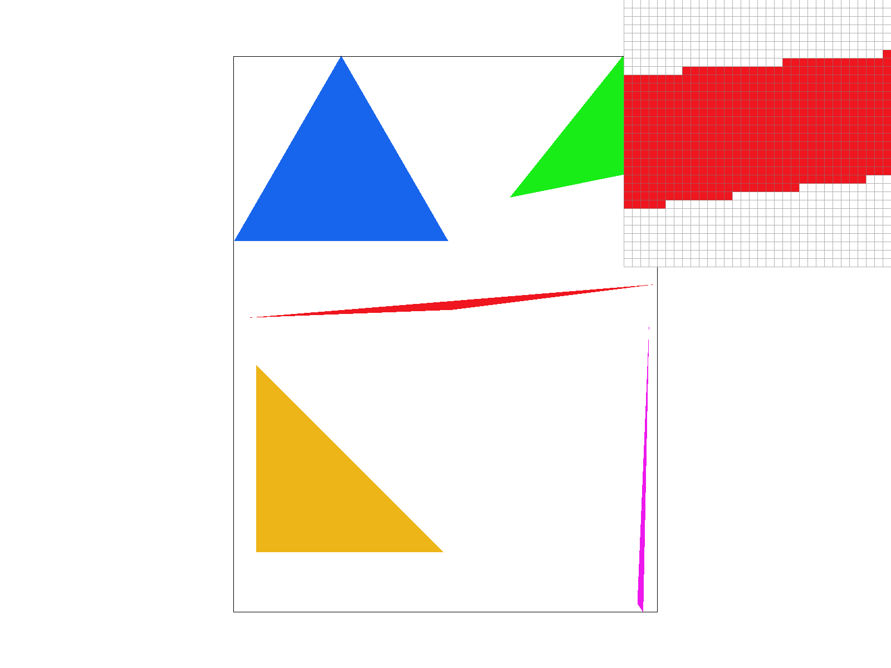
Extra credit: scanline filling
I precompute the edge equations and find the covered interval on each sample row. After testing the endpoints, I fill the span without repeating three edge tests for every interior sample. O switches between scanline filling and the bounding-box baseline. Scanlines are the default for a regular sample grid; jitter uses bounding-box tests.
| Scene | Bounding box | Scanline | Speedup |
|---|---|---|---|
| basic/test4.svg | 0.396 ms | 0.064 ms | 6.19× |
| illustration/05_lion.svg | 2.295 ms | 0.389 ms | 5.90× |
| illustration/09_kochcurve.svg | 0.114 ms | 0.107 ms | 1.07× |
Measured with clock() around SVG::draw in a Release build at 1024×1024 and 1 sample per pixel. Each value is the median of seven draws after one warm-up, excluding loading, clearing, resolving, and PNG output. Large triangles benefit most; tiny triangles leave little work to skip. The methods produced identical pixels for 4,000 random triangles across sample rates 1, 4, 9, and 16.
Task 2: Antialiasing by supersampling
One sample can miss thin geometry and gives jagged edges because a pixel is either covered or uncovered. I divide each pixel into a √sample_rate × √sample_rate grid and test every cell center. Four samples use a 2×2 grid at offsets 0.25 and 0.75; sixteen use a 4×4 grid. The average color estimates how much of the pixel the triangle covers.
The sample_buffer holds width * height * sample_rate colors, with each pixel's samples stored consecutively. Pixel (x, y) starts at:
The term y * width skips preceding rows, x selects the column, and multiplying by the sample rate skips preceding groups of samples. I resize the buffer when the sample rate or framebuffer changes and clear it to white before each redraw. Points and lines fill all samples of their pixel; triangles update only covered samples.
After all shapes are drawn, resolve_to_framebuffer averages each pixel's sample colors and converts the result to 8-bit RGB. Keeping samples separate until then preserves uncovered background and handles overlapping shapes.


At 1 sample, the inspector shows abrupt white-to-red steps. At 4 samples, coverage changes in quarters, adding light red boundary pixels. At 16, coverage changes in sixteenths and the edge becomes smoother. The output resolution stays the same; only the coverage estimate improves. Thin features can still fall between samples, and higher rates use more memory and rasterization work.
Task 2 extra credit: jittered sampling
J replaces each grid-cell center with one jittered position inside that cell. A hash of the pixel and sample index keeps positions stable across redraws and consistent across shared edges. At 1 sample per pixel, I retain center sampling.

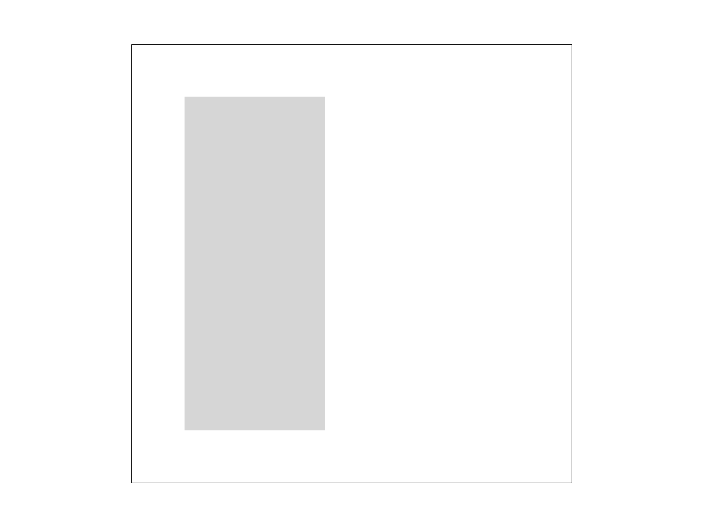

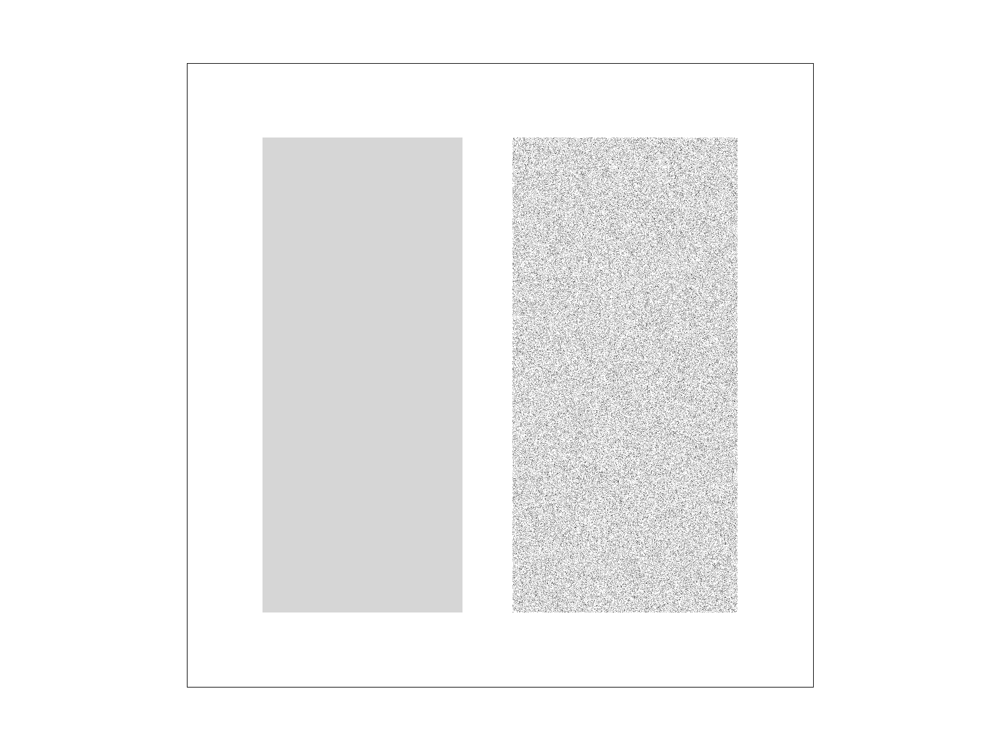
In the thin-stripe scene, the left rectangle is a gray reference and the right contains narrow black stripes. At this scale, all four regular samples miss the stripes, leaving white. Jitter breaks that alignment and recovers the average coverage, with visible noise. A matching coverage check averaged 83.8% white, close to the expected 84%. Both captures use a 1600×1200 framebuffer.
Task 3: Transforms
I implemented translation, scaling, and rotation with 3×3 matrices applied to homogeneous points (x, y, 1). Translation uses the last column, scaling multiplies each axis, and rotation uses sine and cosine after converting degrees to radians.
For my_robot.svg, I made cubeman wave hello. The arm on the right has a −35° shoulder rotation and a nested −70° elbow rotation. Translating the groups to the joints makes each rotation pivot at the correct place; nesting keeps the forearm attached when the shoulder moves. I angled the other arm downward, tilted the head to 30°, and used blue and gold.

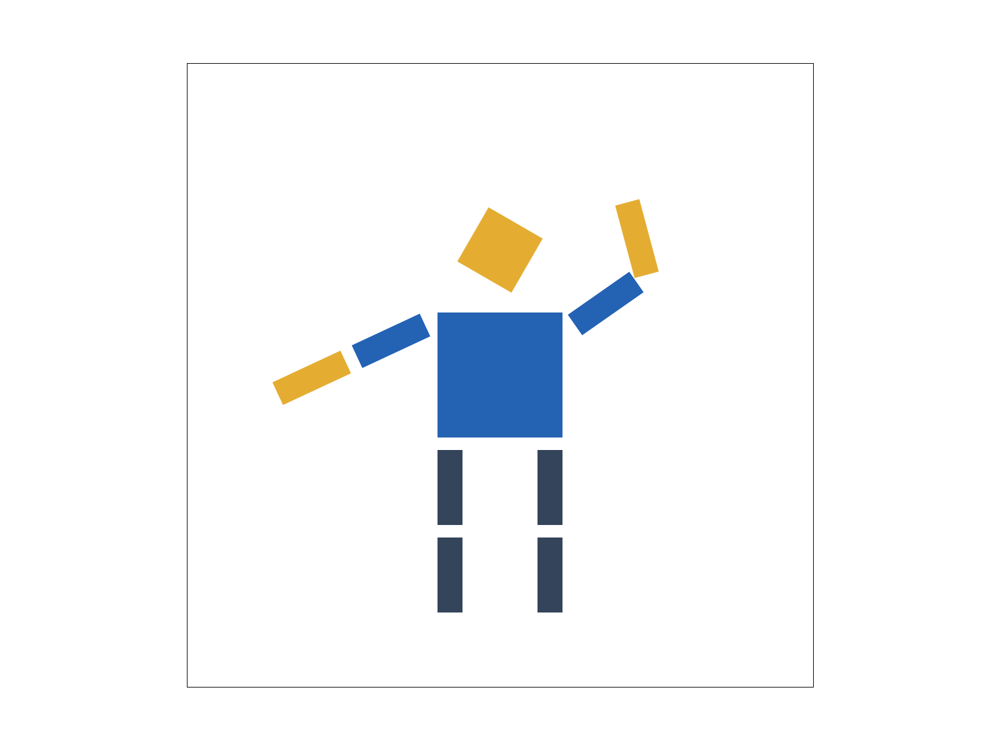
Task 3 extra credit: viewport rotation
Q and E rotate the view counterclockwise and clockwise in 15° steps. I rotate around the center of normalized device coordinates (NDC), between the SVG-to-NDC and NDC-to-screen matrices:
Reading right to left, the existing view matrix applies pan and zoom. The middle matrices move the NDC center to the origin, rotate, and move it back. The final matrix maps to screen pixels. The entire view rotates, including the SVG border.


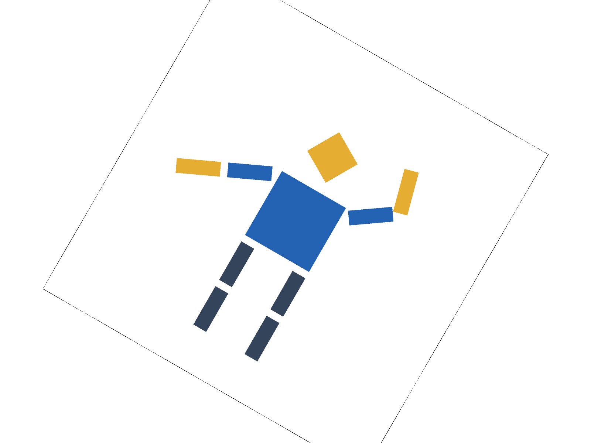
Dragging uses the inverse rotation so movement follows the mouse. Zooming and resizing preserve the angle; Space resets rotation along with pan and zoom. Both views use 4 samples per pixel.
Task 4: Barycentric coordinates
Barycentric coordinates express a point as three vertex weights:
Inside the triangle the weights are nonnegative. At A they are (1, 0, 0); halfway between A and B they are (½, ½, 0); at the centroid each is ⅓. I use those same weights to blend the vertex colors.

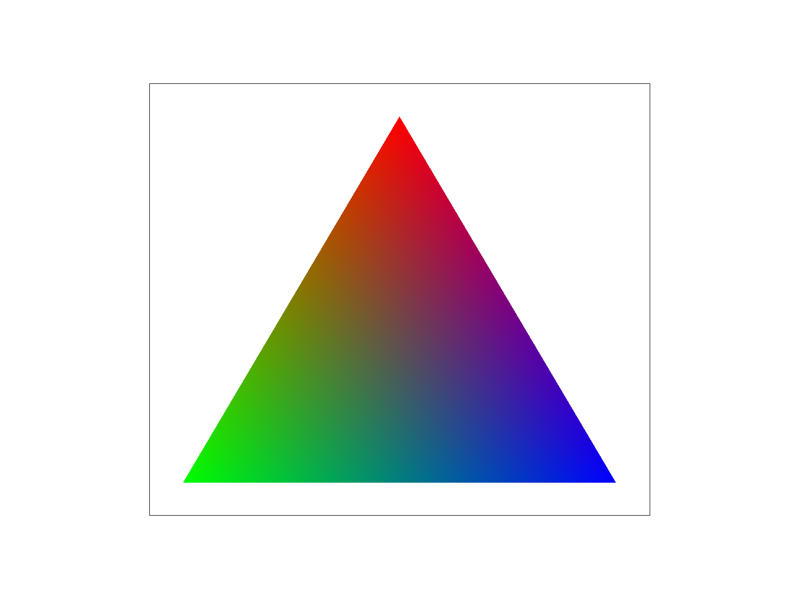

In the first image, the bottom edge has no red contribution, so it blends green to blue. Moving upward increases the red weight. The centroid combines equal amounts of red, green, and blue to produce gray, (⅓, ⅓, ⅓). The second image shows svg/basic/test7.svg at the default view and 1 sample per pixel; its triangles blend toward the black center.
For each covered sample, I compute weights from signed area ratios, such as α = area(PBC) / area(ABC), then store the weighted color sum in the sample buffer. Reversing the vertex order reverses both area signs, leaving the ratios unchanged. Supersampling averages these interpolated sample colors into each pixel. The sky in the final artwork is another example of this interpolation.
Task 5: Pixel sampling
Pixel sampling chooses a texture color at a UV coordinate. For every covered screen sample, I interpolate the triangle's vertex UVs using barycentric weights, then map (u, v) to texel coordinates using the texture's width and height.
Nearest sampling rounds to the closest texel. Bilinear sampling finds the four neighboring texels, blends each row using the fractional x position, and blends the rows using the fractional y position. I clamp coordinates at texture boundaries. With supersampling, each sample gets its own texture lookup before the pixel colors are averaged.
These captures of svg/texmap/test1.svg use the same magnified coastline, with the pixel inspector along western Africa.


Task 5: coastline detail
Nearest at 1 sample produces blocks with abrupt color changes. At 16 samples, their boundaries soften but the blocks remain. Bilinear gives a gradual blue-to-green transition even at 1 sample; increasing to 16 makes a smaller difference here.
The difference is largest when magnifying a texture with strongly contrasting neighboring texels. Nearest repeats each texel as a block, while bilinear fills in intermediate colors. Nearly uniform textures look similar with both methods. Neither method alone removes severe minification aliasing, which motivates mipmaps.
Task 6: Level sampling
Level sampling chooses a smaller, prefiltered texture when many texels fit inside a screen pixel. I compute the UV changes over one screen pixel in x and y, scale them by the texture dimensions, and take log₂ of the longer derivative vector's length. I clamp the result to the available mip levels.
L_ZERO always uses level 0. L_NEAREST rounds the level, while L_LINEAR blends adjacent levels. Linear level sampling combined with bilinear pixel sampling gives trilinear filtering.
| Technique | Speed and memory | Antialiasing effect |
|---|---|---|
| Pixel sampling | Nearest reads 1 texel; bilinear reads 4. Neither needs an extra texture pyramid. | Bilinear smooths magnification; level-0 sampling still aliases when minified. |
| Level sampling | One mip lookup for nearest level, two for linear levels. A full square power-of-two mip chain adds about ⅓ to texture memory. | Prefiltering reduces minification aliasing. Linear levels also smooth transitions between mip levels. |
| Supersampling | At N samples, sample storage and per-sample work grow roughly by N. | Smooths geometric edges and improves within-pixel texture estimates, but finite samples can still miss very fine patterns. |
I chose Frank Klemm's Siemens-star PNG. All four views use the same scale and 1 sample per pixel.

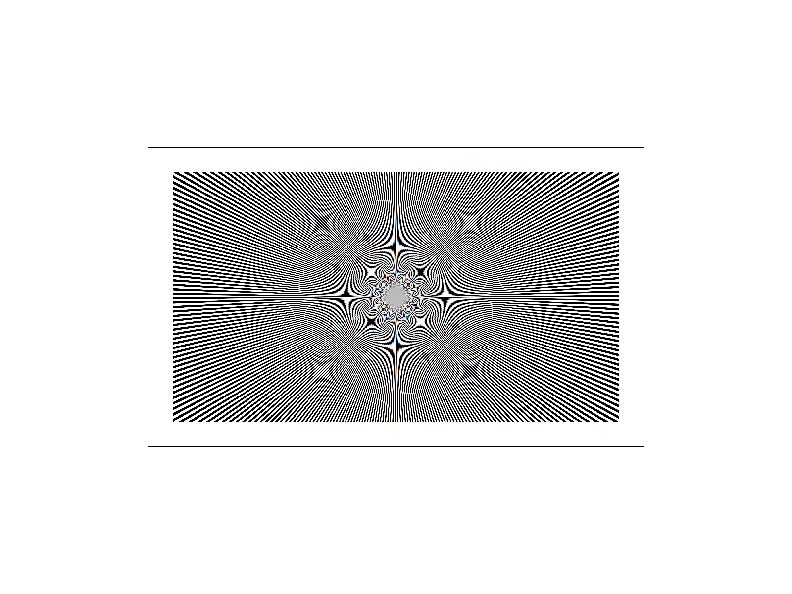

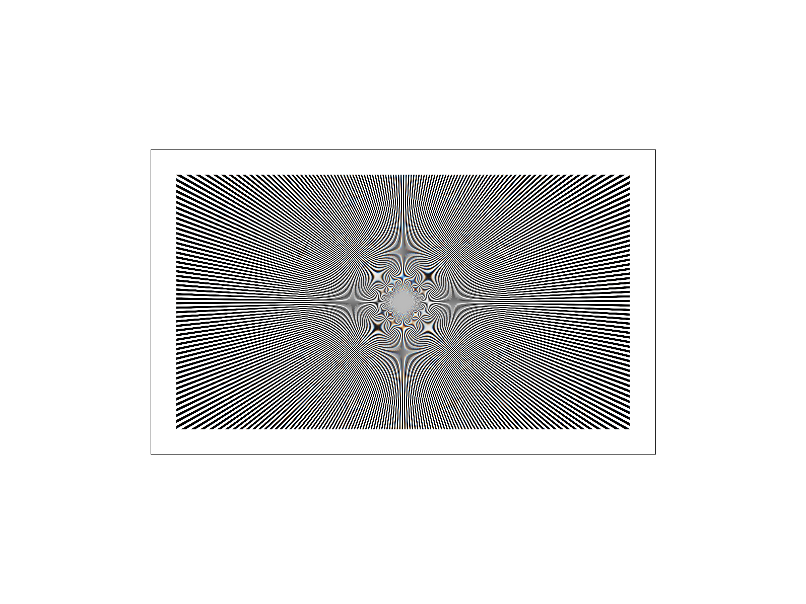

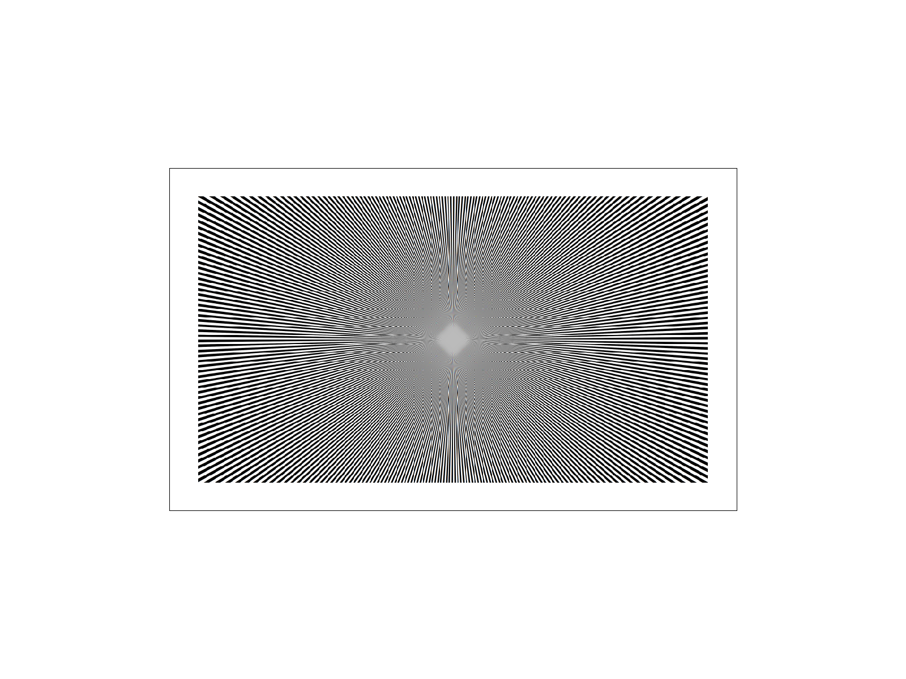

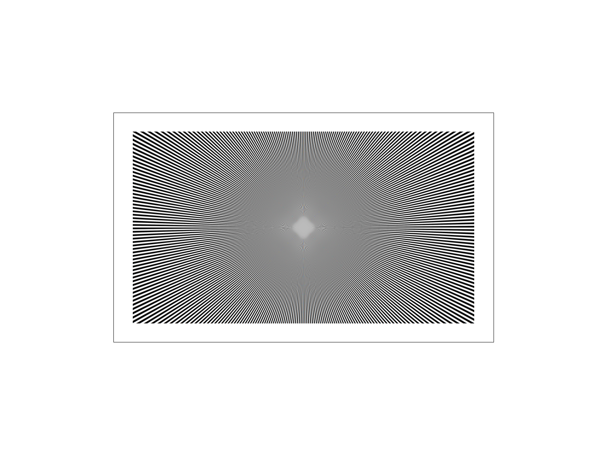
Level 0 shows false repeating patterns near the center, even with bilinear sampling. Nearest-level sampling reduces these patterns. Adding bilinear sampling gives the smoothest result of these four, while softening fine detail.
Texture: Siemens star by Frank Klemm, CC BY-SA 4.0. All resized, transformed, and filtered Siemens-star comparisons on this page use the same license. Each image links to its full renderer capture.

Task 6 extra credit: anisotropic filtering
A enables anisotropic filtering. I use the UV derivatives to find the footprint's principal axes in texture space, select a mip level from its shorter axis, and average trilinear taps along its longer axis. The tap count is capped at 16; larger axis ratios increase the mip level to stay within that limit. This approximates the footprint with a line of samples and reuses the existing mipmaps.


These views use the same slanted texture and 1 sample per pixel. Nearest and bilinear use level 0 and show strong false bands. Trilinear reduces them but blurs spokes around the center. Anisotropic filtering retains more spoke detail while reducing the strongest aliasing. Some fine repeating patterns remain because the finite taps do not integrate the footprint exactly.
| Filter | Draw time |
|---|---|
| Nearest | 4.917 ms |
| Bilinear | 9.019 ms |
| Trilinear | 10.098 ms |
| Anisotropic | 33.612 ms |
The timings use the same clock() method as Task 1 extra credit, at 1024×1024 and 1 sample per pixel. Anisotropic filtering took about 3.3× as long as trilinear because it performs multiple trilinear lookups per sample, without requiring another texture pyramid.
Reference: Khronos anisotropic filtering specification.
Art competition: Amber Campanile
I based this image on a photo I took of the Campanile against an orange sky. I kept the tower on the left, with flat layers for the hills, water, and foreground. Two contrasting faces, simple bell openings, and a plain oval clock suggest the tower without small details.
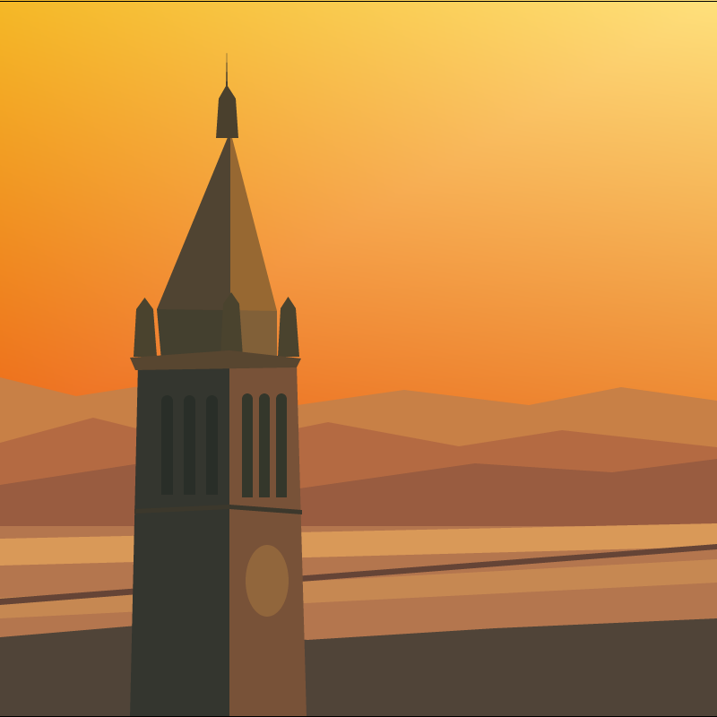
generate_competition.py creates competition.svg. The tower and landscape use polygons. Loops place the bell openings and approximate the clock's oval with straight edges. Two color-interpolated triangles form the sky. The final image is 800×800 with 16 samples per pixel.